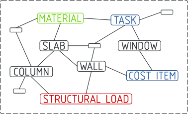
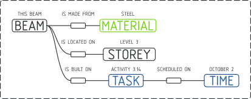
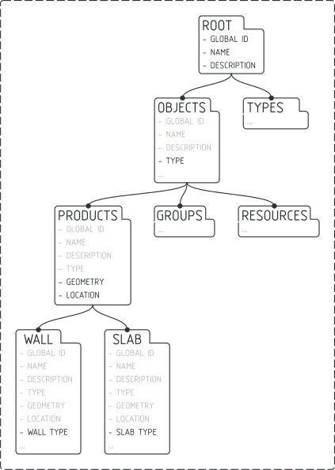

Introduction to IFC¶
An IFC model is a collection of elements (e.g. doors, windows, construction tasks, materials, etc) with relationships to other elements in a graph-like database. Together, these elements and their relationships describe the digital built environment.
Each element has a type known as an IFC Class. These classes define the attributes that the element may store. For example, the IfcWall Class is allowed to store a Name and Description attribute.
This IFC database can be stored in many formats. The most common is the .ifc
format, which stores data in plain text. If you open a .ifc file in a text
editor, you’ll see something like this:
#1=IFCPROJECT('3Cbhu4euf1hfgM_SHZbeqM',$,'My Project',$,$,$,$,$,#4);
#2=IFCSIUNIT(*,.LENGTHUNIT.,.MILLI.,.METRE.);
#3=IFCSIUNIT(*,.AREAUNIT.,$,.SQUARE_METRE.);
#4=IFCUNITASSIGNMENT((#2,#3));
#5=IFCCARTESIANPOINT((0.,0.,0.));
In this example there are 5 elements in the graph. The element with the ID of #1 has an IFC Class of IfcProject. This element has 9 comma-separated attributes. IFC defines how many attributes each IFC Class is allowed to have, attribute names, the order of attributes, data type, optional or mandatory status (i.e. cardinality), and more.
IFC Class Quoted string value Null value ID reference
↓ ↓ ↓ ↓
#1=IFCPROJECT('3Cbhu4euf1hfgM_SHZbeqM',$,'My Project',$,$,$,$,$,#4);
↑ ↑
Element ID Comma-separated list of attributes
By selecting elements by their IFC Class, and reading their attributes, you can navigate from one element to another. The relationships between elements are called IFC Concepts and create meaning in our industry. For example, if a IfcWall element has an attribute that references an IfcBuildingStorey element in a particular way, it will mean that the wall is located in the ground floor of the building.
The official IFC documentation describes hundreds of IFC Classes, ranging from walls, door, to tasks, cost items, parametric materials, and structural analysis constraints. There are also hundreds of IFC Concepts, which may describe how a wall is in a storey, a construction task might occur one after another, or how an surface bounds a space for energy analysis.
It takes time to learn the many IFC Classes and IFC Concepts available. Once you do, you will be able to richly describe our built environment digitally. IfcOpenShell can help you navigate these IFC elements, read their attributes, and explore relationships. Your journey begins here.
See also
If you are already familiar with IFC and just want to learn how to use IfcOpenShell, you can jump to the `Core functionality crash course`_.
Begin learning IFC¶
IFC has three versions published by ISO: IFC2X3 from 2007, IFC4 from 2017, and IFC4X3 in draft form. Each version improves on the previous version, and will have different IFC Classes with different attributes and different IFC Concepts.
You can access the official documentation here:
Tip
It is recommended to use IFC4. However, the IFC4X3 documentation is a lot more friendly to newcomers.
The official ISO documentation is written for a technical audience and may be overwhelming. This guide will take you slowly through the core concepts, and leave you with the knowledge you need to discover more.
Before digging into theory, let’s explore an existing IFC model. You can download this sample IFC for this guide.
If you open up the model with a text editor, you will see text similar to this:
ISO-10303-21;
HEADER;FILE_DESCRIPTION(('ViewDefinition [, QuantityTakeOffAddOnView, SpaceBoundary2ndLevelAddOnView]'),'2;1');
FILE_NAME('AC20-FZK-Haus.ifc','2016-12-21T17:54:06',('Architect'),(''),'','','');
FILE_SCHEMA(('IFC4'));
ENDSEC;
DATA;
#3= IFCORGANIZATION($,'Nicht definiert',$,$,$);
#12= IFCOWNERHISTORY(#7,#11,$,.ADDED.,$,$,$,1482339244);
#13= IFCSIUNIT(*,.LENGTHUNIT.,$,.METRE.);
#14= IFCSIUNIT(*,.AREAUNIT.,$,.SQUARE_METRE.);
...
#62= IFCGEOMETRICREPRESENTATIONCONTEXT($,'Model',3,1.00000000000E-5,#59,#60);
#66= IFCPROJECT('0lY6P5Ur90TAQnnnI6wtnb',#12,'Projekt-FZK-Haus','Projekt FZK-House create by KHH Forschuungszentrum Karlsruhe',$,$,$,(#62,#374),#49);
#77= IFCPROPERTYSINGLEVALUE('GS_TimeStamp',$,IFCTIMESTAMP(9685146),$);
#85= IFCPROPERTYSET('1mnk_H9cG6eU2r9ped0WRu',#12,'GSPset_TimeStamp',$,(#77));
...
#15033= IFCSHAPEREPRESENTATION(#15026,'Axis','Curve2D',(#15031));
#15037= IFCPRODUCTDEFINITIONSHAPE($,$,(#15016,#15024,#15033));
#15042= IFCWALLSTANDARDCASE('2XPyKWY018sA1ygZKgQPtU',#12,'Wand-Int-ERDG-4',$,$,#14983,#15037,'BC6F0F70-6195-495E-A2-FC-239713029DB1',$);
#15046= IFCMATERIAL('Leichtbeton 102890359',$,$);
...
#15231= IFCRELDEFINESBYPROPERTIES('3Q0nMR5elnJFWzAhgkZqe1',#12,$,$,(#15042),#15229);
#15234= IFCWALLTYPE('2AEMyYvIjlsz7LRzqYHy64',#12,'Leichtbeton 102890359 240',$,$,$,(#15244,#15248,#15250,#17288,#17290,#17292,#18637,#18639,#18641,#19015,#19017,#19019,#20770,#20772,#20774),'8A396F22-E52B-6FDB-D1D5-6FDD2247C184',$,.NOTDEFINED.);
#15237= IFCDIRECTION((1.,0.,0.));
#15239= IFCDIRECTION((0.,0.,1.));
... etc
The first thing you should notice is the line that defines that this is an IFC4 version. This determines what IFC Classes and IFC Concepts are available.
FILE_SCHEMA(('IFC4'));
You’ll notice certain IFC Class keywords jump out at you: things like IFCSIUNIT which defines the length unit of metres, or IFCPROJECT which defines the project, or IFCPROPERTYSINGLEVALUE which defines a property of something, or IFCWALLSTANDARDCASE which defines a wall, or IFCMATERIAL which defines a material, and so on.
Let’s see how to fetch this data with code. Let’s start with loading the model.
Import the IfcOpenShell module, then use the open function to load the
model into a variable called model. The first piece of information we want
to check is what IFC schema version we are using. We assume the model you are
learning with is IFC4. We’ll then fetch all entities that use the IfcSlab
class.
import ifcopenshell
model = ifcopenshell.open('/path/to/your/model.ifc')
print(model.schema) # May return IFC2X3, IFC4, or IFC4X3.
print(model.by_type("IfcSlab")) # Will return a list of IFCSLAB entities, like below:
# [
# #34509=IfcSlab('1pPHnf7cXCpPsNEnQf8_6B',#12,'Bodenplatte',$,$,#34464,#34505,'E4D9CD4B-CA43-4735-94-BD-1FD4376BD455',.BASESLAB.),
# #59290=IfcSlab('2RGlQk4xH47RHK93zcTzUL',#12,'Slab-033',$,$,#59253,#59286,'DA0A17AC-B773-47AC-99-C5-D390C73AD5CC',.FLOOR.),
# #59553=IfcSlab('07Enbsqm9C7AQC9iyBwfSD',#12,'Dach-1',$,$,#59508,#59549,'E142B455-80E4-4B96-83-EC-E1589CA998DB',.ROOF.),
# #59753=IfcSlab('2IxUUNUVPB6Ob$eicCfP2N',#12,'Dach-2',$,$,#59716,#59749,'BD6D9414-37DF-40A8-88-40-301A32A9A5B5',.ROOF.)
# ]
Tip
Try changing model.by_type("IfcSlab") to fetch different types of
entities based on their IFC Class.
An overview of all IFC classes¶
There are hundreds of IFC Classes. You don’t need to know them all, but we’ll help describe the general breakdown so you know where to find the appropriate class for what you’re after.
IFC Classes are defined using an Object Oriented tree hierarchy. Child IFC Classes inherit the attributes defined by the parent IFC Class. This means that IFC Classes with common attributes are grouped together in the tree.
For example, because all IfcObject classes can have a GlobalId attribute, that means that because IfcWall is a subtype of IfcObject, it can also have a GlobalId attribute.
Important IFC concepts¶
There are hundreds of IFC Concepts that allow you to describe relationships between IFC Classes. In this guide, we’ll focus on the five most common IFC Concepts to get you started.